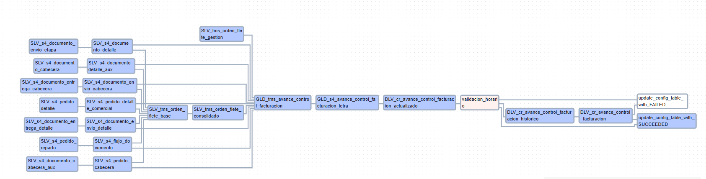

Plantillas Custom
TRANSVERSAL - ACTUALIZACIÓN CON CONDICIONALES
Propósito General
Orquestar la ejecución de scripts SQL en BigQuery para procesar datos relacionados con un modelo de caso de uso Alicorp. Los datos fluyen a través de 3 capas:
- SLV (Silver): Transformaciones iniciales y limpieza.
- GLD (Gold): Enriquecimiento y agregaciones.
- DLV (Delivery): Datos finales para consumo.
Características Clave
-
Programación:
Ejecución cada n horas (0 /n * * ). -
Manejo de Errores:
- Notificaciones por email en caso de fallos.
-
Reintentos automáticos (1 reintento cada 2 minutos).
-
Configuración Dinámica:
Generación automática de tareas basadas enMAPPING_CARPETAS. -
Lógica Horaria:
Ejecuta tareas históricas solo entre 00:00 y 0n:00 (hora Lima).
Estructura del Flujo
1. Componentes Principales
| Elemento | Tipo | Descripción |
|---|---|---|
all_failed |
ErrorHandlerOperator |
Actualiza estado a FAILED en BigQuery si se detectan fallos. |
all_success |
BigQueryInsertJobOperator |
Actualiza estado a SUCCEEDED en BigQuery si todas las tareas se ejecutan con éxito. |
validacion_horario |
BranchPythonOperator |
Determina si se debe ejecutar una tarea histórica o marcar el éxito según la hora actual. |
| Tareas SQL | BigQueryInsertJobOperator |
24 tareas generadas dinámicamente a partir de MAPPING_CARPETAS. |
2. Capas de Datos
| Capa | Descripción | Ejemplos de Tablas |
|---|---|---|
| SLV | Datos crudos transformados | s4_documento_entrega_cabecera, tms_orden_flete_base |
| GLD | Datos enriquecidos | s4_avance_control_facturacion_letra, tms_avance_control_facturacion |
| DLV | Datos listos para consumo | cr_avance_control_facturacion_historico |
3. Dependencias Clave
- SLV_s4_documento_entrega_cabecera → SLV_s4_documento_envio_cabecera → GLD_tms_avance_control_facturacion
- SLV_tms_orden_flete_gestion → GLD_tms_avance_control_facturacion → GLD_s4_avance_control_facturacion_letra → DLV_cr_avance_control_facturacion_actualizado
Configuración Técnica
Variables de Entorno
| Variable | Valor | Función |
|---|---|---|
EMAIL_RECIPIENTS |
['ext_mdelgadoa@alicorp.com.pe', ...] |
Destinatarios de alertas. |
periodo_anterior |
Fecha del mes anterior (formato YYYY-MM-DD) |
Reemplazo en scripts SQL. |
Seguridad
- Impersonación de Cuentas de Servicio:
Cada tarea utilizaimpersonation_chainpara ejecutar el flujo con una GSA custom que posee permisos específicos.
Flujo de Ejecución
-
Inicio:
Todas las tareas SQL se ejecutan en el orden definido por las dependencias. -
Validación Horaria:
- Entre 00:00 y 0n:00 (hora Lima): Ejecuta
DLV_cr_avance_control_facturacion_historico. -
Fuera de este horario: Se salta a la actualización del estado a SUCCEEDED.
-
Finalización:
- Exitoso:
all_successactualiza el estado en BigQuery. - Fallido:
all_failedregistra el error y notifica.
Grafo de Ejecución

Plantilla
Código Fuente: Descargar plantilla